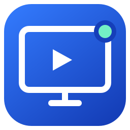
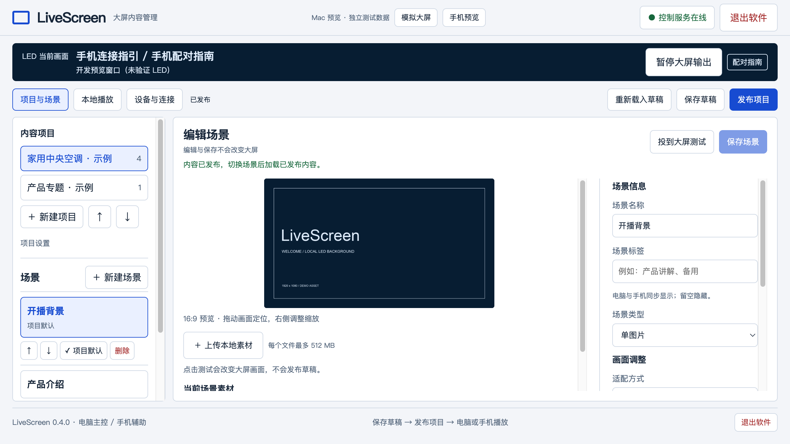
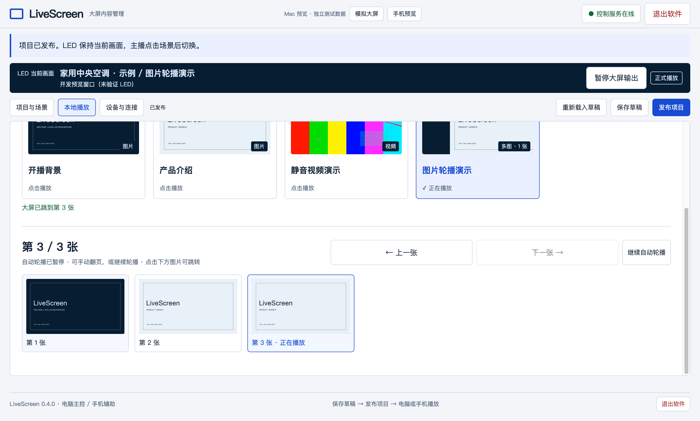

Windows
下载 .exe Windows 10 / 11 · x64
Windows 桌面版 0.4.0
LiveScreenLOCAL FIRST. SCREEN READY.
把图片、视频和多图内容交给 LiveScreen。
电脑负责管理与播放，手机随手辅助切换。
Windows / macOS MIT 开源 局域网使用
YOUR NEXT SCENE
好内容，
值得大一点。
把注意力留给现场。
仅演示场景切换，不连接或控制你的设备。
CONTROL AT YOUR DESK
创建项目、整理场景、上传素材。保存的是草稿，发布后才更新可播放内容；编辑时，大屏继续保持当前画面。

KEEP THE MOMENT MOVING
多图内容平铺预览，点击缩略图直接跳页。可以自动轮播，也可以手动接管，暂停轮播后慢慢讲。

A SMALL, LOCAL SETUP
播放和素材都在大屏电脑上。手机只是控制入口，关闭手机网页，不会停止电脑上的播放。
把显示器设为扩展模式，在软件中绑定大屏。操作主屏保持独立。
上传图片或 H.264 MP4，保存、发布，直接在电脑上播放。
连接可互通的网络，扫描电脑或大屏上的二维码，输入配对码。
MAKE IT YOUR SCREEN
安装包与源码托管在 GitHub。
两个系统独立下载，使用同一套操作逻辑。
BEFORE YOU START
不需要。连接与电脑互通的局域网后，用相机扫码并在浏览器里配对。使用同一浏览器、保留网站数据，下次可以自动连接。
先连接到可互通的网络。二维码会跟随电脑地址变化更新，但无法穿过企业网络的设备隔离；访客网络、不同子网或防火墙限制需要网络管理员确认。
保存在运行 LiveScreen 的那台电脑。即使用另一台电脑的远程管理网页上传，文件也会复制到大屏主机，不依赖上传设备继续在线。
LiveScreen 播放提前准备好的图片、视频和多图场景，不镜像手机屏幕，不负责推流。稳定版可先将 PPT 导出成图片或 MP4；0.5.0 预览版支持静态导入 PPT / PDF，PPT 直导需要大屏主机安装转换工具，不播放 PPT 动画。
窗口关闭按钮会把管理界面收进后台，播放继续。通过 Windows 托盘、Mac 菜单栏或 Dock 找回；点击“退出软件”才会彻底停止服务和输出。
可以。项目采用 MIT 许可，源码、构建说明和问题反馈都在 GitHub。第三方依赖保留各自许可，自己的素材也应具备相应使用权。